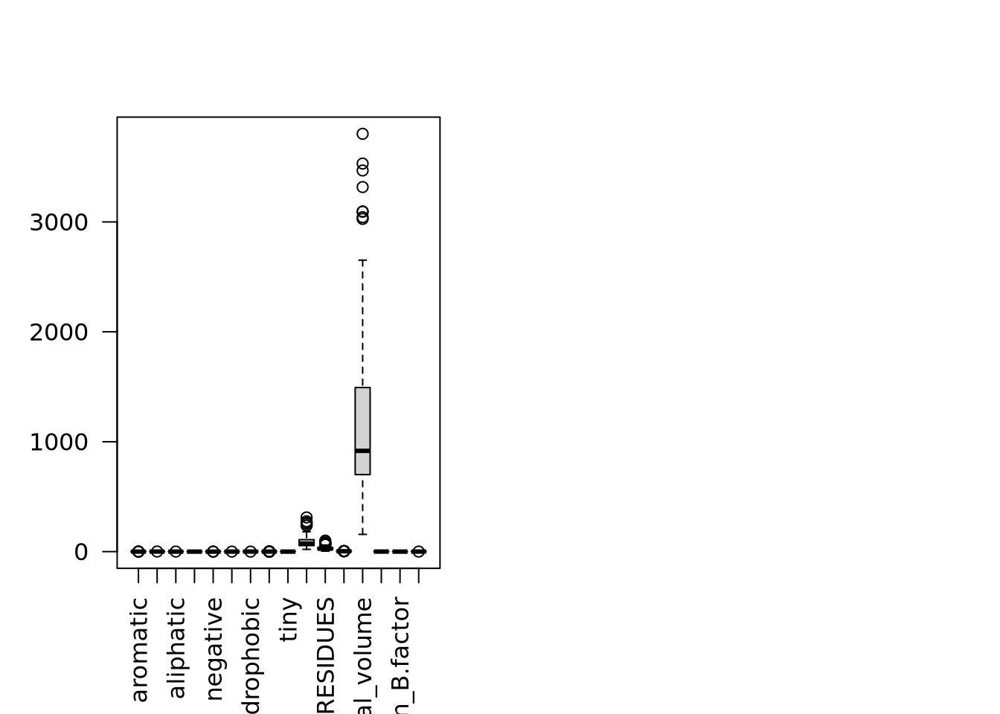
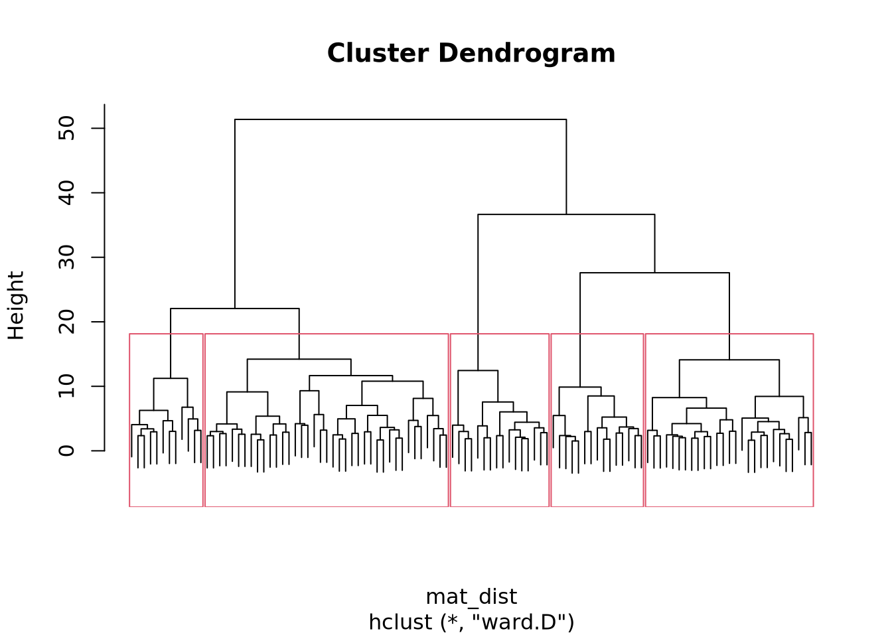

load('../data/X.Rdata')TP1 : Classification des données
Dans ce TP, l’objectif est d’utiliser des méthodes de classification non-supervisées sur des variables indépendantes de notre jeu de données. Ce dernier contient des poches de protéines décrites par 18 descripteurs, les variables indépendantes.
Chargeons les données dans un premier temps
Visualisation des données du dataframe X
par(mfrow = c(1, 2))
boxplot(X, las = 2)
boxplot(scale(X), las = 2)
Hierarchical classification
# Mise à l'échelle des données
x_scaled <- scale(X)
# Justifier les méthodes
mat_dist <- dist(x_scaled, method = "euclidian")
x_classif <- hclust(mat_dist, method = "ward.D")Nous utilisons une méthode euclidienne pour la matrice de distance car nous travaillons sur des grandeurs géométriques.
library(factoextra)Loading required package: ggplot2Welcome! Want to learn more? See two factoextra-related books at https://goo.gl/ve3WBapar(mfrow = c(1, 1))
# Détermination du nombre optimal de clusters
fviz_nbclust(x_scaled, method = "wss", FUNcluster=hcut)
# Représentation de l'arbre de classification
plot(x_classif, labels = FALSE)
rect.hclust(x_classif, k=5)
# Récupération des clusters
cutree(x_classif, k=10)1K8Q 3F0R 1PWM 1U30 3IA4 2CL5 1LOX 2IVU 1XM6 2I0E 1RV1 3F1Q 1UDT 1KE6 1GWR 1V4S
1 1 2 2 3 4 5 6 2 6 7 3 1 2 1 2
1RWQ 1HW8 1SQN 1SQI 1K7F 1OWE 1KVO 1R9O 1QHI 2FB8 1J4I 2AA2 2BR1 1HVR 1HVY 1T46
5 8 1 1 9 8 3 3 5 6 1 1 6 6 7 6
1XOZ 1M2Z 1IG3 3D4S 2GH5 2DQ7 1YVF 1VBM 1U4D 1O5R 1QPE 1GKC 2HIW 1RSZ 1YQY 1C14
2 1 2 2 3 6 2 10 6 10 6 5 6 9 4 1
1LPZ 1N2V 1UOU 3B68 2I1M 1FK9 1Q41 1M17 2BXR 1JS3 1PMN 2G24 1YWR 1YWN 1R55 3ETR
10 9 9 1 6 1 9 6 3 10 3 1 3 6 9 4
1UNL 1R58 4COX 1E9X 1E66 1KZN 1O8B 1KTS 1OD8 1GPU 1OLQ 1C9Y 1G7V 1QMF 1F9G 2GSU
6 10 1 3 1 6 9 9 5 10 9 10 2 9 8 8
3PCM 1HQG 1NNC 1ONZ 1PX4 1AJS 1V16 1G98 1MAI 1D09 1CG0 2GYI 1UCN 1B74 1FTH 1NLJ
2 10 2 8 10 10 10 10 10 10 3 4 2 9 8 8
1BLS 1QXO 1BMQ 1M0N 1JAK 3JDW 1ICJ 1X9D 1WVC 1KC7 1T03 1MOQ 1EC9
8 3 10 3 5 2 7 10 9 10 7 10 10 table(cutree(x_classif, k=10))
1 2 3 4 5 6 7 8 9 10
15 14 12 4 6 15 4 8 12 19 loc <- cmdscale(mat_dist)
x <- loc[, 1]
y <- loc[, 2]
## note asp = 1, to ensure Euclidean distances are represented correctly
plot(x, y, type = "n", xlab = "", ylab = "", asp = 1, axes = FALSE,
main = "cmdscale(eurodist)")
text(x, y, rownames(loc), cex = 0.6)
kmeans
# Clustering des infividus
x_clust <- kmeans(mat_dist, centers=10)
plot(x_scaled, col = x_clust$cluster)
points(x_clust$centers, col = 1:5, pch = 8)
Combien de clusters faut-il faire
nstart
nstart permet de choisir le nombre de sets aléatoires de centres à tester. Si nous prenons nstart = 1, un seul set aléatoire de centres sera testé. Cela donc générer des clusters différents entre deux réalisation de kmeans. Si nous prenons nstart = 50, 50 sets différents seront testés. Ainsi les résultats convergeront vers les mêmes clusters, garantissant une reproductibilité des résultat entre deux itérations. Un équilibre est à trouver en fonction de la taille du jeu de données, pour un petit jeu tel que le nôtre un nstart = 50 pourrait être trop élevé.
x_clust_1 <- kmeans(mat_dist, centers=10, nstart=1)
tb_1 <- table(x_clust_1$cluster)
x_clust_5 <- kmeans(mat_dist, centers=10, nstart=5)
tb_5 <- table(x_clust_5$cluster)
x_clust_10 <- kmeans(mat_dist, centers=10, nstart=10)
tb_10 <- table(x_clust_10$cluster)
x_clust_25 <- kmeans(mat_dist, centers=10, nstart=25)
tb_25 <- table(x_clust_25$cluster)
x_clust_50 <- kmeans(mat_dist, centers=10, nstart=50)
tb_50 <- table(x_clust_50$cluster)Différentes valeurs de nstart on été testées: 1, 5 10, 25, 50, 100. La répartition étant identique à partir de 5 donc nous allons continuer avec elle.
loc <- cmdscale(mat_dist)
x <- loc[, 1]
y <- loc[, 2]
## note asp = 1, to ensure Euclidean distances are represented correctly
plot(x, y, type = "n", xlab = "", ylab = "", asp = 1, axes = FALSE,
main = "cmdscale(eurodist)")
text(x, y, rownames(loc), cex = 0.6)
# Clustering des individus final
plot(x_scaled, col = x_clust_5$cluster)
points(x_clust$centers, col = 1:5, pch = 8)
cmd Recherche du nombre optimal de clusters
fviz_nbclust(x_scaled, method = "wss", FUNcluster=hcut)
Comparaison classification et clusters
Classification des descripteurs
mat_cor <- cor(X)
mat_cor_dist <- as.dist(1 - mat_cor**2)# library(gplots)
# heatmap.2(mat_cor_dist, hclustfun=hclust)